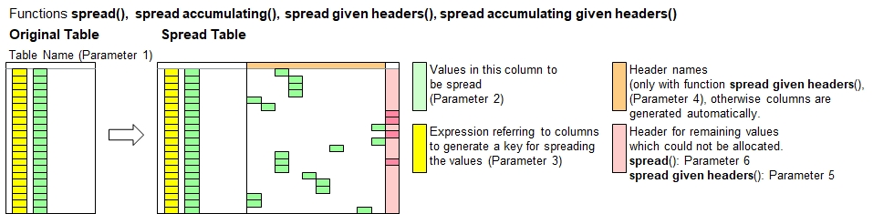

Function Names
table spread, table spread accumulatingDescription
This is a pivot function which spreads vertically listed data horizontally across multiple columns using a key derived from
information in other columns, (e.g. sequence info like dates, quarters, years, states, countries and/or category info like revenues,earnings, etc.).
The columns created in horizontal order will be arranged in case sensitive alphabetic order. Values to be spreaded must not necessarily be numeric,
unless you use table spread accumulating.

This function creates new headers only if they are not yet existing. If headers are existing, then data below will be preserved unless overwritten by values being spread.
The function table spread accumulating will add the new values to the existing value instead of overwriting it. You can do multiple calls of this function on the same table.
Hint:To finalize a pivot from vertical horizontal, call table consolidate() as the net function to reduce the number of rows
to the minimum necessary.
Call as: procedure or function
Restrictions
Indirect parameter passing is disabled
Parameter count
3-7
Parameters
| No. | Type | Description |
|---|---|---|
| 1. input |
literal | Name of existing table |
| 2. input |
table columns | Column with values to spread Specify the column which contains the values or any other conetns you want to spread horizontally.
|
| 3. code |
expression :literal |
Spreading key expression In order to spread the data horizontally across columns to be created, you need to specify how the new column headers names shall be
formulated for the horizontal data. This parameter is an expression which is calculated for every table row and should preferably
generate an output value of literal type (string). Other types, such as numerals (e.g. years) will be converted to strings automatically.
During the horizontal spreading, the applicable value (column specified in 2nd parameter) will be copied to the new columns with these
header names.
Attention: New columns will only be created if they are not yet existing. This scheme allows running multiple calls of table spread and table spread accumulating with different data. This function does not delete any existing values. Values already existing will only be overwritten or added up. |
| Opt. 4. code |
expression :literal |
Pivot limitation expression This is an expression which will be calculated for every table rowo and shall return a boolean value.
If the value is true, then the value will be spread into a dedicated column. This feature lets you limit the creation of too many columns.
All values excluded will appear in the column for all other values, if defined using the 6th function parameter.
Specify the conditions or rules to select the rows. See expressions to select rows. |
| Opt. 5. code |
numeral | Maximum number of columns to add You can limit the number of columns to be created in order to prevent overruns. In this case, only the first n columns (in alphabetic order) will be shown. Default value: (not limited) |
| Opt. 6. input |
table column | Column for all other values This column will be used to allocate all values which cannot be allocate into the specified columns due to limitations
defined by the 4th and/or 5th function parameters.
|
| Opt. 7. input |
table column | Destination column Specify a header name or column number where to insert the new columns added. The specified column and further ones to the right will shift to the
right accordingly.
|
Return value
| Type | Description |
|---|---|
| numeral | Column count Number of new columns added. The 'column for other values' specified in the 6th function parameter is not included in the counting. |
Examples
// Remember the motor vehicles serialized ...
table initialize( bils, // Swedisch for 'cars', aka 'automo-bils'
{ { Product, "2020-Q1".."2020-Q4" },
{ Sedans, 24, 34, 44, 14 }, { Pickpus, 11, 21, 31, 21 },
{ Cabrios, '', 5, 10, '' }, { SUVs, 35, 25, 45, 55 } } );
echo("Car sales in sequential order (including blanks here):");
table serialize all( bils, Product, Quarter, { "2020-Q1".."2020-Q4" }, Cars sold );
table list ( bils );
echo("Let's shift to reverse gear: Spread the data");
count[] = table spread( bils, Cars sold, [Quarter] );
table list ( bils );
echo("Number of new columns created. ", count[]);
echo("And do a final consolidation and you get the original list.");
table consolidate( bils, Product, { Quarter, Cars sold, "2020-Q1".."2020-Q4" }, { 2:delete, overwrite if blank } );
table list ( bils );
Output
Car sales in sequential order (including blanks here):
0 : Product | Quarter | Cars sold
1 : Sedans | 2020-Q1 | 24
2 : Sedans | 2020-Q2 | 34
3 : Sedans | 2020-Q3 | 44
4 : Sedans | 2020-Q4 | 14
5 : Pickpus | 2020-Q1 | 11
6 : Pickpus | 2020-Q2 | 21
7 : Pickpus | 2020-Q3 | 31
8 : Pickpus | 2020-Q4 | 21
9 : Cabrios | 2020-Q1 |
10 : Cabrios | 2020-Q2 | 5
11 : Cabrios | 2020-Q3 | 10
12 : Cabrios | 2020-Q4 |
13 : SUVs | 2020-Q1 | 35
14 : SUVs | 2020-Q2 | 25
15 : SUVs | 2020-Q3 | 45
16 : SUVs | 2020-Q4 | 55
Let's shift to reverse gear: Spread the data
0 : Product | Quarter | Cars sold | 2020-Q1 | 2020-Q2 | 2020-Q3 | 2020-Q4
1 : Sedans | 2020-Q1 | 24 | 24 | | |
2 : Sedans | 2020-Q2 | 34 | | 34 | |
3 : Sedans | 2020-Q3 | 44 | | | 44 |
4 : Sedans | 2020-Q4 | 14 | | | | 14
5 : Pickpus | 2020-Q1 | 11 | 11 | | |
6 : Pickpus | 2020-Q2 | 21 | | 21 | |
7 : Pickpus | 2020-Q3 | 31 | | | 31 |
8 : Pickpus | 2020-Q4 | 21 | | | | 21
9 : Cabrios | 2020-Q1 | | | | |
10 : Cabrios | 2020-Q2 | 5 | | 5 | |
11 : Cabrios | 2020-Q3 | 10 | | | 10 |
12 : Cabrios | 2020-Q4 | | | | |
13 : SUVs | 2020-Q1 | 35 | 35 | | |
14 : SUVs | 2020-Q2 | 25 | | 25 | |
15 : SUVs | 2020-Q3 | 45 | | | 45 |
16 : SUVs | 2020-Q4 | 55 | | | | 55
Number of new columns created. 4
And do a final consolidation and you get the original list.
0 : Product | 2020-Q1 | 2020-Q2 | 2020-Q3 | 2020-Q4
1 : Sedans | 24 | 34 | 44 | 14
2 : Pickpus | 11 | 21 | 31 | 21
3 : Cabrios | | 5 | 10 |
4 : SUVs | 35 | 25 | 45 | 55
See also
table spread given headers
table consolidate
table serialize